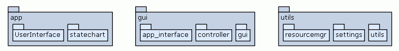

| Trees | Indices | Help |
|---|
|
|
Created on Jan 13, 2014
Author: Eugene Syriani
Version: 0.2.5
This is the main BiBler module. Execute this module from the command line to start the application.
Note: It assumes that the app package has a statechart.BiBler_Statechart class and a UserInterface.UserInterface class that implements gui.app_interface.IApplication.
|  |
| Package Tree for app, gui, and utils |
|
|||
__package__ = Nonehash(x) |
|||
Imports: wx, MainWindow, Controller, BiBler_Statechart, UserInterface
| Trees | Indices | Help |
|---|
| Generated by Epydoc 3.0.1 on Wed Jan 22 13:16:35 2014 | http://epydoc.sourceforge.net |